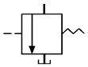
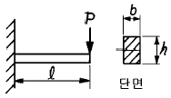
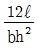
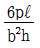
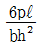
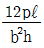
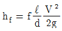
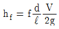
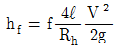
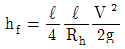

건설기계정비산업기사 (2004-03-07 기출문제)
1과목: 건설기계정비
1. 타이어식 로더가 골재장에서 적하작업시 작업성능에 미치는 영향이 가장 적은 것은?
- 원동기 성능
- 건설기계의 중량
- 토사의 재질과 량
- 타이어의 마모상태
(정답률: 81%)

2. 어느 디젤기관을 10시간 연속 100PS로 운전한 결과 100ℓ의 연료가 소모되었다. 이 기관의 1시간당 연료 소비량은 몇 g 인가? (단, 연료의 비중은 0.83이다.)
- 83g/ps-h
- 90g/ps-h
- 75g/ps-h
- 80g/ps-h
(정답률: 71%)
3. 크랭크케이스 내의 오일이 연소실내로 유입되어 배기밸브를 통해 배기 다기관으로 유출되는 현상은?
- 블로바이 현상
- 슬로버링 현상
- 노킹현상
- 채터링 현상
(정답률: 55%)
4. 도로 포장공사 중 아스팔트 콘크리트를 일정한 두께와 폭으로 펴주는 장비는 어느 것인가?
- 아스팔트 믹싱 플랜트
- 아스팔트 스프레더
- 아스팔트 살포기
- 아스팔트 피니셔
(정답률: 70%)
5. 페라이트 자석식 윈드 와이퍼 모터가 작동하지 않는 원인이 아닌 것은?
- 스위치(Switch)의 불량
- 정류자(Commutator)의 오손
- 계자 코일(Field Coil)의 불량
- 전기자 코일(Armature Coil)의 불량
(정답률: 56%)
6. 저압 타이어(Tire)의 치수를 10.00 - 20 - 10PR 등으로 표시하고 있는데 어느것이 옳은 해석인가?
- 앞숫자의 10.00이란 타이어의 높이를 뜻하고 단위는 cm 이다.
- 10PR이란, 사용되는 필요한 타이어 개수(個數)를 말한다.
- 10.00은 타이어의 외경(外徑), 20은 타이어의 내경을 말한다.
- 10.00은 타이어의 폭, 20은 타이어의 내경(內徑)을 말한다.
(정답률: 74%)
7. 다음의 제어 밸브 중 압력제어 밸브가 아닌 것은?
- 릴리프(relief) 밸브
- 스풀(spool) 밸브
- 리듀싱(reducing) 밸브
- 시퀀스(sequence) 밸브
(정답률: 94%)
8. 엔진 밸브의 오버랩을 두는 이유는?
- 배기온도를 낮게 한다.
- 흡기 공기량을 많게 한다.
- 밸브의 마모를 방지한다.
- 점화 시기를 지연한다.
(정답률: 80%)
9. 디젤유의 착화 촉진제로 부적당한 것은?
- 아닐린(C6H6N)
- 초산에틸(C2H5NO3)
- 4에틸납[(Pb(C2H5)4]
- 초산아밀(C5H11NO3)
(정답률: 72%)
10. 디젤기관의 전자제어 거버너 액추에이터의 구성요소가 아닌 것은?
- 스텝 모터
- 휘트스톤 브리지
- 리니어 솔레노이드
- DC모터
(정답률: 62%)
11. 건설기계의 작업장치에서 기관의 동력인출(P.T.O : power take off)은 작업용구를 작동시키기 위한 오일펌프나 윈치(winch)를 구동하기 위해 기관의 동력을 끌어내는 방법이 있다. 다음 중 틀린 것은?
- 플라이 휠 P.T.O
- 크랭크축 앞 P.T.O
- 변속기 P.T.O
- 클러치 P.T.O
(정답률: 68%)
12. 다음은 기중기의 붐각도에 대해 설명한 것이다. 틀린 것은?
- 붐의 각도가 커지면 작업반경은 작아진다.
- 붐의 각도가 커지면 기중 능력은 커진다.
- 작업 반경이 커지면 기중능력은 작아진다.
- 화물이 무거울수록 붐길이를 길게하고, 각도는 크게 한다.
(정답률: 87%)
13. 타이어식 굴삭기가 평탄한 도로를 주행할 때 방향 안정성이 없다. 이때 가장 알맞는 수정 방법은?
- 토인을 조정한다.
- 정의 캐스터로 조정한다.
- 부의 캐스터로 조정한다.
- 캠버를 0으로 조정한다.
(정답률: 63%)
14. 브레이크 드럼의 표준내경이 200.0mm인 것을 편마모 되었으므로 201.0mm로 연삭했다. 이때 라이닝의 두께를 몇 mm의 오버 사이즈로 교체해야 하는가?
- 0.25mm
- 0.50mm
- 1.0mm
- 2.0mm
(정답률: 60%)
15. 모터그레이더의 스케리파이어는 무엇인가?
- 작업 노면을 골라 주는 삽이다.
- 작업 노면을 긁어 파는 쇠스랑이다.
- 작업 노면과의 충격이 환향휠에 전달되는 것을 감소시키는 장치이다.
- 삽을 360도 회전 시켜주는 장치이다.
(정답률: 82%)
16. 디젤기관 연소실 가운데 디젤노크를 가장 일으키기 쉬운 연소실은 어느 것인가?
- 직접 분사식
- 공기 실식
- 예연소실식
- 와류 실식
(정답률: 78%)
17. 휠타입 굴삭기에 장착된 콤프레셔에서 생성되는 공기는 어느 계통에 사용되는가?
- 작업장치 계통
- 환향장치 계통
- 클러치 계통
- 브레이크 계통
(정답률: 64%)
18. 조속기를 설치한 기관에서 회전수 2000rpm으로 유지하려한다. 무부하시 2⑤0rpm이고, 전부하시 1900rpm이면, 조속기의 속도변화율은 몇 % 인가?
- 7.89
- 5.26
- 2.63
- 5
(정답률: 23%)
19. 기관의 회전수가 4800rpm, 최고출력 70ps, 총 감속비가 4.8, 뒤 액슬축의 회전수가 1,000rpm, 바퀴의 반지름이 320mm일때 차량의 속도는 얼마인가?
- 약 60km/h
- 약 80km/h
- 약 112km/h
- 약 121km/h
(정답률: 22%)
20. 굴삭기가 시동이 되지 않아 정비하고자 한다. 점검 항목으로 잘못된 것은?
- 시동모터 키 릴레이 코일로 전원이 공급되고 있는지 확인한다.
- 키 스위치 작동 후 솔레노이드의 F단자로 전원이 공급 되는지 점검했다.
- 시동모터의 플런저가 작동되지 않아 스테이터 코일의 상태를 점검했다.
- 릴레이로부터 시동모터의 ST단자로 전원이 공급 되는가 확인한다.
(정답률: 85%)
2과목: 내연기관
21. 2 kg의 공기가 팽창하여 그 체적이 4배로 되었다. 팽창하는 과정 중에 온도는 50℃로 일정하게 유지되었다면 이계가 한 일은 몇 kJ인가? (단, 공기의 기체상수 R= 0.287kJ/kg.K 이다.)
- 181.1
- 201.1
- 237.1
- 257.1
(정답률: 19%)
22. 디젤노크가 가장 잘 일어나지 않는 형식은?
- 직접분사식
- 예연소실식
- 공기실식
- 와류실식
(정답률: 30%)
23. 가솔린기관에서 크랭크축의 회전수와 점화진각과의 관계를 설명한 것으로 가장 알맞는 것은?
- 크랭크축 회전수의 감소와 더불어 점화진각은 커진다.
- 크랭크축 회전수와 점화진각과는 무관하다.
- 크랭크축 회전수에 관계없이 점화진각은 일정하다.
- 크랭크축 회전수의 증가와 더불어 점화진각은 커진다.
(정답률: 77%)
24. 가솔린기관과 디젤기관의 차이점을 열거한 것이다. 가장 바르지 않은 것은?
- 압축비의 차이
- 폭발주기의 차이
- 점화방법의 차이
- 연소과정의 차이
(정답률: 79%)
25. 표준대기압 하에서 운전되는 기관의 체적 효율 ηv와 충전효율 ηc와의 관계를 바르게 표시한 식은?
- ηc = 0.5ηv
- ηc = ηv
- ηc= 1.5ηv
- ηc = 2ηv
(정답률: 60%)
26. 다음 중 표면 착화 기관이라고도 부르는 기관은 어느 것인가?
- 가솔린 기관
- 소구 기관
- 디젤 기관
- 방켈 기관
(정답률: 65%)
27. 흡, 배기 밸브를 사점전에서 열어주는 것을 무엇이라 하는가?
- 블로 다운(Blow Down)
- 밸브 오버 랩(Over lap)
- 밸브 리드(Lead)
- 랩(lap)
(정답률: 63%)
28. 체적효율을 구하려면 반드시 주어져야 하는 값은?
- 배기가스의 중량
- 연료의 분무량
- 연료 공기의 중량
- 실제 흡입 공기 중량
(정답률: 85%)
29. 블로바이의 설명 중 가장 적합한 것은?
- 연소실내에서 신기와 배기가 서로 공존하는 현상
- 신기가 연소실에 들어오는 량 만큼 배기가 연소실에서 빠져나가는 현상
- 신기와 배기가 연소실내에서 경계층을 이루고 있는 현상
- 연소실 가스가 피스톤과 실린더 사이로 빠져 나가는 현상
(정답률: 91%)
30. 전자제어식 연료분사장치 기관에서 분사노즐의 개방시간은 2∼8ms이다. 기본분사량을 결정하는데 필요한 신호는?
- 분사노즐의 양정
- 연료펌프의 크기
- 배터리의 전압세기
- 흡입공기량
(정답률: 82%)
31. 어느 기관의 도시마력이 100PS, 도시 연료 소비율이 240g/PS-H 이다. 이 기관의 제동마력이 80PS 이라면 제동 연료 소비율은 몇 g/PS-H 인가?
- 192
- 240
- 300
- 320
(정답률: 31%)
32. 다음 중 윤활유의 주 기능이 아닌 것은?
- 밀봉작용
- 청결작용
- 노킹작용
- 기밀작용
(정답률: 90%)
33. 다음 중 2행정 사이클 기관에 관한 설명으로 옳지 않은 것은?
- 연료 소비율이 크다.
- 기관의 마력당 중량이 크다.
- 실린더 벽이 과열되기 쉽다.
- 밸브가 없거나 있어도 그 기구가 간단하다.
(정답률: 80%)
34. 가솔린(gasoline) 본래의 색은?
- 적색
- 청색
- 무색
- 백색
(정답률: 83%)
35. 예연소실식 디젤기관의 분사압력은 대략 몇 kgf/cm2정도 인가?
- 160~232
- 20~47
- 260~300
- 80~50
(정답률: 39%)
36. 실린더내경 35cm, 행정 25cm, 회전수가 500rpm인 4행정 단실린더 기관의 평균 유효 압력이 5Kgf/cm2이면 그 출력은 몇 [PS]인가?
- 55.6
- 66.7
- 77.8
- 85.2
(정답률: 41%)
37. 자동차용 기관에서 과급을 하는 주된 목적은?
- 흡.배기 소음을 줄이기 위하여
- 실린더내 평균 유효압력을 낮추기 위하여
- 기관의 출력을 증대시키기 위하여
- 기관의 윤활유 소비를 줄이기 위하여
(정답률: 93%)
38. 브레이턴 사이클의 열효율이 50%라면 압력비 ρ 는 얼마인가? (단, 비열비 k=1.4이다.)
- 13.75
- 12.69
- 12.24
- 11.32
(정답률: 13%)
39. 1사이클 중 열손실이 가장 큰 행정은 어느 것인가?
- 흡입행정
- 압축행정
- 팽창행정
- 배기행정
(정답률: 60%)
40. 실린더내의 연소가스 온도가 1,600℃, 냉각수 온도 80℃, 전열면적 1.458 m2인 실린더 기관의 발열량은? (단, 열통과율은 k=215 kcal/m2∙h℃이다.)
- 501,552(kcal/h)
- 476,474.4(kcal/h)
- 238,237.2(kcal/h)
- 25,077.6(kcal/h)
(정답률: 59%)
3과목: 유압기기 및 건설기계안전관리
41. 기관분해 정비시 냉각수 통로에 잔유물이 많을때 세정 작업을 하는 것은?
- 경 유
- 솔벤트
- 산성액
- 수돗물 혹은 증류수
(정답률: 78%)
42. 무한궤도식(crawler type) 굴삭기를 트럭에 적재하는 방법으로 안전하지 못한 것은?
- 발판 위에서는 장비를 절대로 조향해서는 안 된다.
- 작업장치는 반드시 뒤쪽으로 향하게 하고 서서히 발판 위를 올라간다.
- 적재할 트럭의 주차브레이크를 완전히 작동시키고 바퀴에 고임목을 고인다.
- 좌,우 발판을 트럭 본체의 후미 중심에 좌,우로 균등하게 배열하고 단단히 고정한다.
(정답률: 85%)
43. 압축공기를 이용한 공구사용 중 틀린 것은?
- 공기건조기를 사용하면 수명이 길어진다.
- 압축공기를 이용하여 작업복의 먼지를 털어 낸다.
- 압축공기 탱크의 수분을 정기적으로 배출 시킨다.
- 공구를 사용시는 규정압력 이상이 되지 않도록 주의 한다.
(정답률: 82%)
44. 보기와 같은 유압 도면기호는 무슨 밸브를 나타내는가?

- 릴리프 밸브
- 안전밸브
- 시퀀스밸브
- 무부하 밸브
(정답률: 47%)
45. 잭과 블록의 사용시 맞지 않는 것은?
- 잭을 이용하여 장비를 들어올릴때 충분한 용량의 잭을 사용한다.
- 장비가 올바르고, 견고한 위치에 잭을 설치한다.
- 잭을 이용하여 장비를 들어 올린 후 견고한 블록을 설치한다.
- 블록이 없을 경우는 잭만을 이용하여 장비를 들어 올린 후 작업한다.
(정답률: 89%)
46. 유압 펌프의 특징에 대한 설명으로 틀리는 것은?
- 기어 펌프 : 구조가 간단하고 소형이다.
- 베인 펌프 : 장시간 사용해도 성능의 저하가 작다.
- 나사 펌프 : 운전이 동적이고 내구성이 작다.
- 피스톤 펌프 : 고압에 적당하고 효율이 좋다.
(정답률: 63%)
47. 건설기계 차량의 변속기 점검· 정비를 할 때 유의 사항으로 적합하지 않은 것은?
- 차량을 잭으로 들어올리고 견고한 스탠드로 받치고 작업한다.
- 차량 밑에서 작업을 할 때에는 보안경을 착용하고 작업한다.
- 변속기 어셈블리는 무겁기 때문에 주의해서 취급 하여야 한다.
- 변속기를 조립 할 때에는 중요 부위의 일부 볼트만 규정토크로 조인다.
(정답률: 84%)
48. 유압유의 특성에서 물리적인 것과 화학적인 것이 있다. 다음 중 화학적인 특성인 것은?
- 점도지수
- 밀도
- 유동점
- 산화안정성
(정답률: 80%)
49. 모방 선반의 유압 장치에서 오일 탱크의 유온이 상승하였다. 다음 유온 상승의 주된 원인이 아닌 것은?
- 회로내 압력 손실이 증가하였다.
- 탱크 용량이 지나치게 크다.
- 제어 밸브의 허용용량이 부족하다.
- 냉각기가 고장나 있다.
(정답률: 94%)
50. 다음 중 안전사고의 원인으로 인적요인이 아닌 것은?
- 작업방법의 잘못
- 근로조건
- 신체조건
- 작업환경
(정답률: 68%)
51. 다음은 축압기에 관한 설명이다 틀리는 것은?
- 간헐적이고 순간적인 운동에 대해 저축한 에너지를 방출한다.
- 펌프의 맥동 압력을 발생하도록 도와준다.
- 축압기를 사용해도 유효하게 할 수 있는 작업량에는 변함이 없다.
- 완충 작용을 할 수 있다.
(정답률: 48%)
52. 방향제어 밸브 중 파일롯 작동형 체크밸브와 함께 유압작업요소의 중간 정지에 사용하는 밸브로 가장 적합한 것은?
- ABT 접속형 밸브
- PAB 접속형 밸브
- PT 접속형 밸브
- 연결구 카운터 밸브
(정답률: 38%)
53. 디젤기관의 압축압력을 점검할 때 안전에 관한 사항으로 가장 적합한 것은?
- 기관 점검시 회전하는 물체에 손이나 옷자락이 닿지 않도록 한다.
- 압축압력 측정시 측정하지 않는 실린더의 점화플러그 홀은 열려있는 상태로 한다.
- 점화 1차 회로는 연결한 상태로 압축압력을 측정한다
- 압축압력을 정확하게 읽기 위하여 압력계를 눈에 가까이 한다.
(정답률: 84%)
54. 건설기계의 연료탱크 작업 후 탱크에 연료를 가득 채우는 이유는?
- 수분응축을 최소화하기 위해
- 최대의 수분응축을 위해
- 빠른 작업교대를 위해
- 많은 연료확보를 위해
(정답률: 90%)
55. 내경 50mm인 유압실린더에 의해 1500kgf의 추력을 발생시키려고 할 때 필요로 하는 최소유압은 몇 kgf/cm2인가? (단, 피스톤의 자중, 마찰 등은 무시하고 복귀유의 압력은 0 으로 한다.)
- 64.25
- 76.53
- 87.64
- 92.82
(정답률: 52%)
56. 유압 응용 장치에서 오일의 팽창 및 수축을 이용한 경우에 해당되는 것은?
- 진동 개폐 밸브
- 쇼크 업소버
- 유압 프레스
- 토크 컨버터
(정답률: 45%)
57. 다음 중 실린더만으로 전후진 양방향의 힘과 속도가 같은 실린더는?
- 양로드식 복동실린더
- 텔레스코픽 실린더
- 램형 실린더
- 디지털 실린더
(정답률: 97%)
58. 가스용접등에 사용되는 고압가스 용기의 안전한 취급사항이 아닌 것은?
- 용기의 온도는 40 ℃ 이하로 유지시킨다.
- 빈용기와 충전된 용기는 확실히 구별하여 보관한다.
- 아세틸렌 용기는 가능하면 눕혀놓고 사용한다.
- 운반 및 이동시는 밸브를 완전히 잠그고, 캡을 확실하게 고정한다.
(정답률: 95%)
59. 다음은 무거운 물건을 옮길때 사용하는 굴림대 사용방법에 대하여 설명하였다. 맞는 것은?
- 우천시 굴림대 밑에 자갈을 뿌린다.
- 운반속도는 최고속도를 유지한다.
- 굴림대는 운반물보다 양측으로 30cm정도 나오게한다.
- 굴림대의 간격은 30~50cm로 설치한다.
(정답률: 56%)
60. 유압장치의 주요 구성 요소가 아닌 것은?
- 유압 동력 장치
- 유압 제어 밸브
- 유압 부하
- 유압작동기 및 배관
(정답률: 92%)
4과목: 일반기계공학
61. 단판 마찰클러치의 접촉면 평균 지름이 80 ㎜, 전달 토크 494 ㎏f· ㎜, 마찰계수 0.2 인 경우에 토크를 전달시키려면 몇 ㎏f의 힘이 필요한가?
- 44.8
- 51.8
- 61.8
- 73.8
(정답률: 35%)
62. 300 rpm으로 2.5 kw를 전달시키고 있는 축의 비틀림 모멘트는 몇 kgfㆍmm인가?
- 5240
- 7120
- 8120
- 2420
(정답률: 28%)
63. 주물에서 기공(blow hole)의 유무를 검사하는 방법이 될수 없는 것은?
- 자기 탐상법
- 형광 탐상법
- 초음파 탐상법
- 방사선 탐상방법
(정답률: 49%)
64. 다음 중 마찰 클러치의 장점이 아닌 것은?
- 주동축의 운전 중에도 단속이 가능하다.
- 무단변속에도 적은 충격으로 단속시킬 수 있다.
- 토크가 걸리면 미끄럼이 일어나 안전장치의 작용을 한다.
- 클러치의 재료는 온도상승에 의한 마찰계수 변화가 커야한다.
(정답률: 80%)
65. 지름 20mm의 드릴로 연강 판에 구멍을 뚫을 때, 회전수가 200rpm 이면 절삭속도는 약 몇 m/min 인가?
- 12.6
- 15.5
- 17.6
- 75.3
(정답률: 26%)
66. 금속재료의 시험에서 인장시험에 의해서 산출하는 것이 아닌 것은?
- 항복강도
- 연신율
- 단면수축율
- 피로강도
(정답률: 44%)
67. 사용하는 측정기의 최소 측정단위가 1 ㎛이면 몇 mm까지 측정이 가능한가?
- 1/100
- 1/1000
- 1/10000
- 1/1000000
(정답률: 66%)
68. 강판의 두께 12 mm, 리벳의 지름 20 mm, 피치 50 mm의 1줄 겹치기 리벳이음에서 1피치 당 하중이 1,200 kgf 일 경우, 강판의 인장응력은 몇 kgf/mm2 인가?
- 3.33
- 6.42
- 7.53
- 8.61
(정답률: 30%)
69. 다음 중 나사산 단면이 3각형 형태가 아닌 것은?
- 미터나사
- 휘트워드나사
- 유니파이나사
- 애크미나사
(정답률: 39%)
70. 건설차량, 산업 건설 기계, 산업차량, 트랙터, 콤바인 등에 사용되는 펌프로서 구조가 소형이며 간단하고 가격도 싸다. 다만 가변 용량이 곤란하며 누설이 많아 최고 압력이 7 MPa 이하인 펌프는 어느 것인가?
- 베인펌프
- 기어 펌프
- 피스톤 펌프
- 다단펌프
(정답률: 66%)
71. 펌프운전시 출구와 입구의 압력변동이 생기고 유량이 변하는 현상을 무엇이라고 하는가?
- 수격현상
- 공동현상
- 서징현상
- 유체 고착현상
(정답률: 36%)
72. 4 m/sec의 속도로 회전하는 평벨트의 긴장측의 장력을 114 kgf, 이완측 장력을 45 kgf이라 하면 전달 동력은 약 몇 마력(PS) 인가?
- 2.7
- 3.7
- 4.5
- 6.1
(정답률: 52%)
73. 다음 중 시효경화(時效硬化)가 가장 잘 일어나는 금속은?
- Y 합금
- 두랄루민
- 배빗 메탈
- 고속도강
(정답률: 57%)
74. 다음 전기용접봉의 피복제중 내균열성이 가장좋은 것은?
- 철분산화철계
- 저수소계
- 일미나이트계
- 고산화티탄계
(정답률: 50%)
75. 그림과 같은 4각형 단면의 외팔보에 발생하는 최대 굽힘 응력은 어느 식으로 표시되는가?





(정답률: 40%)
76. 체인의 원동차 잇수(Z1)가 30개, 회전수(N1) 300 rpm이고, 종동차 잇수(Z2)가 20개일 때 종동차의 회전수(N2)와 종동차의 속도(V2)는 각각 얼마인가? (단, 종동차의 피치는 15 mm 이다.)
- N2=450 rpm, V2=2.25 m/s
- N2=400 rpm, V2=2 m/s
- N2=450 rpm, V2=2.75 m/s
- N2=400 rpm, V22=2.5 m/s
(정답률: 24%)
77. 안지름이 1 m인 압력용기에 5 kgf/cm2 의 내압이 작용하고 있다. 압력용기의 뚜껑을 18개의 볼트로 체결 할 경우 볼트의 지름은 얼마로 설정해야 하는가? (단, 볼트 지름 방향의 허용인장응력을 1000 kgf/cm2 이고, 볼트에는 인장하중만 작용한다.)
- 16.7mm, M18
- 21.7mm, M22
- 26.7mm, M27
- 31.7mm, M33
(정답률: 22%)
78. 다음 중 반동수차가 아닌 것은?
- 프란시스 수차
- 프로펠러 수차
- 카플란 수차
- 펠톤수차
(정답률: 47%)
79. 펌프에서 관의 길이 ℓ [m], 마찰계수 f, 유체의 평균 유속 V[m/sec]일때 관의 마찰 손실수두 hf를 구하는 식은? (단, 관은 한변이 b[m]인 정사각형이며, Rh는 수력 반지름이고, 원관의 지름 d[m] 이다.)




(정답률: 26%)
80. 스프링 재료로서 갖추어야 할 가장 중요한 성질은?
- 소성
- 탄성
- 가단성
- 전성
(정답률: 89%)